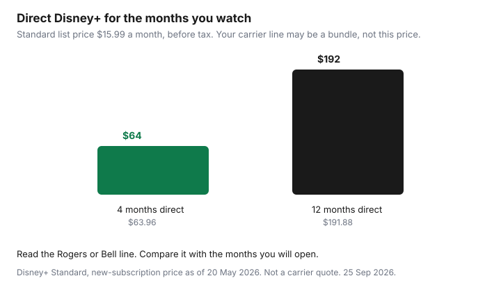

Subscriptions · Canada
Audit Rogers and Bell Streaming Add-Ons: Subscription Fees Hiding on Your Phone Bill
Disney+, Apple TV, Netflix, and Crave often sit on a Rogers or Bell bill after a promo, a TV package, or a “bundle and save” screen. The charge is quiet because it is not a separate card charge from the streamer. This page is how to find that line, cancel the add-on in the carrier’s own subscriptions area, and stop a paused direct plan from waking up. It is not a guide to switching internet providers or to dropping Ignite or Fibe as a plan.
What to watch once the add-on is gone is the rotation guide. How the charge hid in the first place is the statement hunt.
Disclosure: Education only. This page has no natural affiliate offer. Saving Optimizer does not claim a Rogers, Bell, Netflix, Disney+, Apple, or Crave partnership. Prices that appear are the streamers’ own published figures or a labelled comparison, date-stamped. Your bill is the carrier price.
Key takeaways
- Rogers lists individual streaming add-ons as their own lines, a bundle add-on as one line, and apps inside an Xfinity TV package inside the package description.
- Unlinking Netflix, Disney+, or Apple TV in MyRogers does not remove the charge. Cancel the add-on or the bundle.
- Bell’s subscription cancel path is MyBell, My services, Subscriptions, Manage subscriptions, Cancel subscription, then confirm. That path is not a change to the internet plan.
- A paused Disney+ plan billed by Disney can resume when the Rogers or Bell subscription ends. Crave bought direct is not auto-paused when you add Crave through Bell.
- Four months of Disney+ Standard direct is $63.96 before tax. Twelve months is $191.88. Compare your line with the months you will open.
- Choosing a new internet or TV plan is a different guide. Stop at the streaming line.
Read the bill line items for Disney+/Apple/streaming app add-ons
Download the latest Rogers or Bell bill, not the app summary that shows one total. You are looking for a section that names a streamer. Rogers’ third-party streaming terms, in force as of 27 August 2025 and read for this draft on 25 Sep 2026, describe three ways the apps show up. An individual add-on or a tier upgrade is its own line. A bundle of streaming apps sold as an add-on is one bundle line. Apps that come inside a Rogers Xfinity TV or Xfinity Streaming package do not get a separate line. They are named in the package description. If you only scan for the word Disney and the apps are inside the package, you will miss them.
Bell’s subscription support page says streaming services and their fees, once ordered, are effective immediately, and that a Subscriptions section is added to the monthly bill. Invoicing begins on the day of purchase, not on the day you activate. A line can exist before anyone has opened the app. Search the PDF for Crave, Netflix, Disney, TSN, RDS, and Apple. A credit that offsets a promo, such as a 24-month credit described on some Bell Mobility Crave pages, still means the underlying charge exists. When the credit ends, the line remains unless you cancel it.
Write each line in the subscription sheet: name, amount, whether it is an individual add-on, a bundle, or part of a TV package, and who can cancel it. The renewal calendar gets a date only when the bill shows a renewal. Many of these lines are monthly and simply continue. Those still need a cancel date you choose, not a date the carrier picks for you.
Separate internet/TV plan cost from a-la-carte streaming add-ons
The internet plan is the line for the connection: speed, data, and the modem story. The TV plan is the channel package. A streaming add-on is a third product that happens to be printed nearby. Rogers’ terms say you may subscribe to Netflix, Disney+, Apple TV, Hayu, or Sportsnet+ through Rogers as individual or bundled add-ons, or as part of a TV or streaming package. Those are not the same SKU as the internet tier. Bell says you must already have, or be buying, Bell Internet, Mobility, TV, or Home phone to purchase streaming through Bell. Eligibility is not the same thing as “the streamer is your internet.”
On a Rogers bill, if Disney+ is its own line, that dollar is the add-on. If the only mention is inside “Xfinity App TV with StreamSaver” or a similar package name, you are looking at a TV or streaming package that includes apps. Rogers’ App TV page, read 25 Sep 2026, advertised App TV with StreamSaver at $30 a month after a $10 monthly credit for 24 months, regular $40 a month, including 70-plus channels plus Netflix Standard with ads, Disney+ Standard with ads, and Apple TV. That $30 is not a Disney+ price. It is a package price. Do not divide it by three and call the result your Disney+ cost. App TV Basic on the same page was advertised at $15 a month after a $5 credit for 24 months, regular $20, without that three-app description. Read your own line. Promos change.
A Bell TV Crave checkbox inside channel selection is programming. Bell’s help for changing Fibe or satellite programming is a channel-change flow, not an internet-speed change. A Crave, Disney+, or Netflix row under MyBell Subscriptions is the a-la-carte streaming row. Keep those two clicks apart. This audit removes or prices the streaming row. It does not retune the channel package except to notice that Crave might be hiding there.
Cancel add-ons in carrier self-serve without touching the base internet plan
Rogers, for an individual streaming add-on: the terms say you may cancel at any time under the Rogers/Shaw terms of service. Cancellation takes effect on the next billing date for that app, and you are no longer subscribed through Rogers. You cancel in the Subscriptions tab of MyRogers, or by calling the support number printed on the terms page, 1-888-764-3771. A bundle add-on cannot be split. You cannot cancel only Disney+ inside the bundle. You cancel the bundle, and that also takes effect on the next billing date. Apps that are part of an Xfinity TV or Xfinity Streaming package cannot be removed one by one. Changing that package is a TV-package decision. Leave it for the Internet guides if you are only here to stop a surprise app charge. Do not change the internet tier to make a streaming line disappear.
Unlinking is not cancelling. Rogers says if you unlink or deactivate the streaming account, you are still subscribed through Rogers and the apps stay on the bill until you cancel as above. People do this, see the app log them out, and keep paying.
Bell’s cancel steps, on the subscriptions support page read 25 Sep 2026, are: log in to MyBell, select My services, then Subscriptions, select Manage subscriptions, select the subscription, select Cancel subscription, select Yes, cancel subscription, review, and select Confirm cancellation. You can change a streaming plan or bundle through MyBell every 30 days. Upgrades are effective immediately. Downgrades and lateral bundle changes start at the next scheduled renewal. None of those clicks is “change my internet speed.” If the control you are about to press mentions fibre, Ignite, or a term on the internet agreement, stop. You are in the wrong menu.
Save the confirmation. Put it in the cancelled archive on the calendar. Access often continues until the next billing date or the scheduled renewal. A charge for the period you already entered can still be owed. That is different from a new period.
Watch for paused direct subscriptions that resume when you leave the add-on
This is the fee that returns a month later on a different card. Rogers’ terms are explicit. If you activated Netflix, Disney+, or Apple TV through Rogers with the same credentials as an existing plan, billing at the streamer pauses. If you later cancel the Rogers subscription, any paused monthly plan — and, for Disney+, a paused annual plan — resumes directly with the streamer, if you did not cancel it there and the payment method on file is current. Apple One is called out separately: Rogers billing does not replace Apple One. You cancel Apple One with Apple or you pay both.
Paramount+, Sportsnet+, and Hayu are the opposite pattern on that Rogers page: activating through Rogers does not pause the direct plan. You must cancel the direct plan yourself or you pay twice. Read the section for the app you have. Do not assume every logo pauses.
Bell’s Disney+ answer is also specific. A monthly Disney+ plan billed by Disney pauses if the Bell plan is the same tier or higher, and it stays paused until the Bell subscription ends or drops to a lower tier. If you downgrade Bell below the original direct tier, the direct plan un-pauses and you are billed for both. An annual Disney+ plan billed by Disney pauses if you take a higher-tier monthly plan through Bell. If you then downgrade Bell to a tier equal to or lower than that annual plan, the direct plan un-pauses. Disney+ bought through a third party, including an app store or Rogers, is your job to manage. It is not paused by Bell.
Crave is not Disney+. Bell says subscriptions purchased directly from Crave are not automatically paused or cancelled when you subscribe through Bell. A direct Crave bundle, including annual bundles with STARZ or TSN, is also not auto-paused. After you cancel Crave with Bell, Bell says access continues until the scheduled renewal, the Crave account is not deleted, and billing through Bell stops. To keep watching you resubscribe with Crave. If you had no direct plan, nothing should wake up. If you did, it was never asleep. Check crave.ca the day you cancel the Bell row.
The same day you cancel the carrier line, open the streamer’s own membership page. If it says the next charge is on your card, cancel there too if you do not want the direct plan. The trial checklist covers Apple and Google if the original signup was in an app store. Netflix’s help, cited on the rotation guide, says a partner-billed plan is cancelled with the partner, and a card-billed plan is cancelled with Netflix.
Compare add-on price vs signing up direct on a rotation
Direct prices are the ones you can start and stop. Disney+ Help Centre (CA) lists new-subscription prices as of 20 May 2026: Standard With Ads $8.99 a month, Standard $15.99 a month or $159.99 a year, Premium $16.99 a month or $169.99 a year. The Canada FAQ still showed those monthly and annual figures when this page was drafted. Four months of Standard is 4 × $15.99 = $63.96 before tax. Twelve months of monthly Standard is $191.88. A carrier line that bills every month, whether or not you open the app, is the twelve-month column. A rotation is the four-month column, then cancel.

The rotation guide’s ad-supported stack, checked 24 Sep 2026, put Netflix Standard with ads at $7.99, Disney+ Standard With Ads at $8.99, and Crave Standard With Ads at $11.99. A Disney+ and Crave With Ads bundle on Disney’s help table was $15.75 a month. Use those only as the direct alternative. The carrier line wins when it is truly cheaper than the direct months you will use, and when you know how to leave it without resuming a second bill. It loses when the “included” apps are inside a $30 or $40 package you would not buy for live TV. Apple TV’s own Canada price was not reprinted on the Rogers terms page. Read it on Apple’s page before you treat StreamSaver as a discount on Apple TV alone.
Annual Disney+ at $159.99 is a bad fit for a slot you occupy for one season. If the carrier add-on is monthly and easy to cancel, it can be the rotation, but only if the resumed direct plan is already cancelled. Write both prices on the sheet. Keep the lower one for the months you named. Cancel the other.
Boundary: this is billing education—not an ISP switch guide
Stopping here is the point. You have identified the streaming line, separated it from internet and from the TV package, cancelled it in self-serve where the terms allow, and checked that a direct plan did not resume. If the apps are welded inside a TV package and the only way out is a different TV product, that choice lives on the Ignite versus streaming guide. Early termination on an internet contract, win-back calls, and modem returns are Internet guides. Do not start them from this page.
Bell Fibe channel changes and Rogers package changes can affect what you watch on the television. They are still not an instruction to move the household to another ISP. If a loyalty discount on mobility depends on keeping a streaming bundle, read the discount’s end date on the bill and decide whether the discount is larger than the apps you do not open. That is arithmetic on your PDF. It is not a script for a retention department.
Put the result on the audit: one line cancelled, or one line kept because you priced it against four months of direct. Then stop.
Sources & date stamps
- Rogers, “Subscription Terms – Third-Party Streaming Apps,” applicable as of 27 August 2025, read 25 Sep 2026: line items versus package inclusion; cancel individual add-ons and bundle add-ons; unlinking does not cancel billing; paused direct Netflix, Disney+, and Apple TV billing can resume; Paramount+, Sportsnet+, and Hayu are not auto-paused; Apple One is not replaced by Rogers billing.
- Rogers Xfinity App TV page, read 25 Sep 2026: App TV with StreamSaver advertised at $30 a month after a $10 credit for 24 months (regular $40), including Netflix Standard with ads, Disney+ Standard with ads, and Apple TV, plus 70-plus channels. Price subject to change on that page.
- Bell support, Subscriptions, read 25 Sep 2026: MyBell cancel path; invoicing from the purchase date; Disney+ pause and resume rules for monthly and annual direct plans; Crave direct and Crave bundles are not auto-paused; plan changes every 30 days.
- Disney+ Help Centre (CA): new-subscription prices as of 20 May 2026. Standard $15.99 a month or $159.99 a year. Standard With Ads $8.99. Bundle with Crave With Ads $15.75. Confirmed still displayed when this page was drafted.
- Netflix, Disney+, and Crave ad-tier figures used in the rotation guide were checked 24 Sep 2026. They are the direct comparison, not a carrier tariff.
Frequently asked questions
If I unlink Disney+ in MyRogers, does the charge stop?
No. Rogers says unlinking or deactivating the app account leaves you subscribed, and the apps stay on the bill until you cancel the add-on or the bundle in Subscriptions.
Can I cancel only Disney+ inside a Rogers bundle?
Not if the apps were sold as one bundle add-on. Rogers says you cancel the bundle, effective on the next billing date. Individual add-ons can be cancelled on their own. Apps inside an Xfinity TV package are not a separate cancel button.
Where do I cancel a streaming subscription on a Bell bill?
MyBell, My services, Subscriptions, Manage subscriptions, then Cancel subscription and confirm. That is the streaming row. It is not the control that changes your internet plan.
Will my old Disney+ plan start charging my card again?
It can. Rogers says a paused direct monthly plan, or a paused Disney+ annual plan, resumes if you cancel Rogers and you did not cancel it with Disney. Bell describes a similar un-pause when the Bell Disney+ plan ends or drops below the direct tier. Open Disney the same day.
Does this page tell me to leave Rogers or Bell internet?
No. It is billing education for streaming add-ons. A TV-package change or an internet switch belongs on the Internet guides, including the Ignite comparison if that is the decision in front of you.